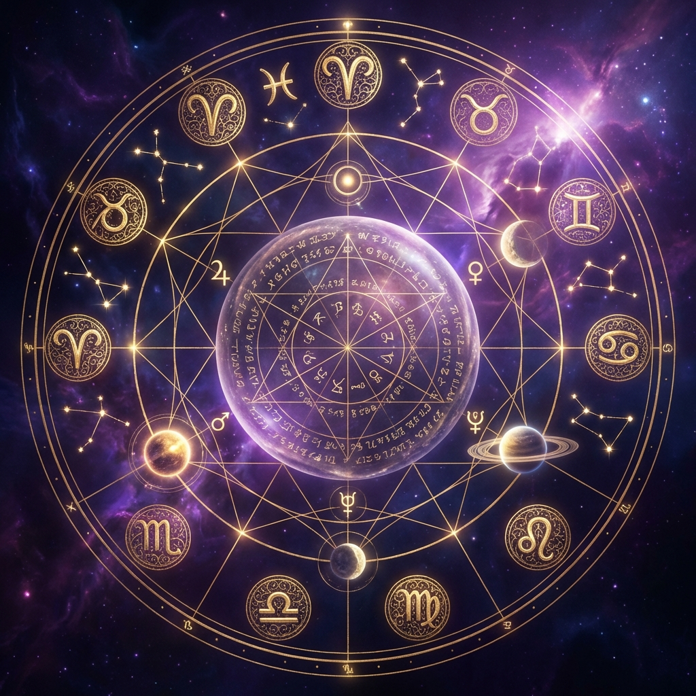

Doğum haritası (Natal Chart), doğduğunuz anda gökyüzünün çekilmiş bir fotoğrafıdır. Parmak iziniz gibi size özeldir ve karakter potansiyellerinizi, yaşam amacınızı, zorluklarınızı ve yeteneklerinizi gösterir. Peki bu karmaşık daireyi nasıl okumaya başlayabilirsiniz?
1. Temel Üçlü: Güneş, Ay ve Yükselen
Bir haritayı okumaya başlarken ilk bakılan üç nokta şunlardır:
- Güneş Burcu (Öz Benlik): "Ben kimim?" sorusunun cevabıdır. Bilinçli kimliğinizi, egonuzu ve yaşam enerjinizi temsil eder. Dergilerde okuduğunuz burcunuz aslında Güneş burcunuzdur.
- Ay Burcu (Duygusal Benlik): "Ne hissediyorum?" sorusunun cevabıdır. İç dünyanızı, duygusal ihtiyaçlarınızı, annenizle ilişkinizi ve bilinçaltı tepkilerinizi gösterir.
- Yükselen Burç (Sosyal Maske): "Başkaları beni nasıl görüyor?" sorusunun cevabıdır. Dış görünüşünüzü, insanlarla ilk etkileşiminizi ve hayata bakış açınızı belirler. Doğum saatinizle belirlenir.
2. Gezegenler: Aktörler
Haritadaki her gezegen, psişenizin farklı bir parçasını temsil eden bir aktördür:
- Merkür: İletişim ve zihin.
- Venüs: Aşk, estetik ve değerler.
- Mars: Eylem, cesaret ve arzu.
- Jüpiter: Şans, büyüme ve inanç.
- Satürn: Disiplin, sınırlar ve sorumluluk.
3. Evler: Sahne
Harita 12 dilime (eve) bölünmüştür. Her ev hayatın bir alanını temsil eder:
- 1. Ev: Kişilik ve dış görünüş.
- 4. Ev: Aile, yuva ve kökler.
- 7. Ev: Evlilik, ortaklıklar ve açık düşmanlar.
- 10. Ev: Kariyer, statü ve tanınma.
4. Açılar: Senaryo
Gezegenlerin birbirleriyle yaptığı geometrik açılar, bu aktörlerin birbirleriyle nasıl ilişki kurduğunu gösterir. 120 derecelik (üçgen) açılar uyumu ve akışı, 90 derecelik (kare) açılar ise çatışmayı ve gelişimi tetikleyen zorlukları gösterir.
Sonuç
Doğum haritası okumak bir ömür boyu sürebilecek derin bir çalışmadır. Ancak temel bileşenleri anlamak, kendinizi tanımanız yolunda büyük bir adımdır. ORBIS uygulaması, gelişmiş yapay zeka algoritmaları ile tüm bu hesaplamaları saniyeler içinde yaparak size detaylı ve anlaşılır yorumlar sunar.